SmartTools Add-on Manual
SmartShader Suite Manual
Version 1.0.0 / November 19, 2026 / For Blender 5.1.2
SmartShader Suite gathers Blender's material work into the "Smart Shader" tab in the Sidebar (N panel). A material is the set of settings that defines how an object looks: its color, gloss, bumps, and so on. With it you can quickly create a material from a preset, create an anime-style toon material, build a material automatically from a set of textures (images), organize and replace the materials in your scene, build lighting from an HDRI, and check and repair anything that is broken. The panel is divided into collapsible section headers. Open only the section headers you need. Click the "?" at the right end of a section header to show an explanation of that section.
1. What This Add-on Does
An add-on that handles material creation, toon conversion, texture import, cleanup, and checking, all from a single tab in the Sidebar. A material is the set of settings that defines how an object looks.
- Choose a preset (a ready-made combination of looks) from sample images and create a new material from it.
- Create base images for bumps and roughness from a single photo, and build a material from them.
- Create anime-style toon materials ("Smart Toon") and adjust the shadow steps, highlights, and rim lights.
- Layer effects such as wear, rust, moss, snow, wetness, and dust on top of a material without rebuilding the original material.
- Recognize a set of textures in a folder, then build and wire up a material automatically.
- Search a folder for broken-link images (images whose location has been lost) and relink them.
- Arrange materials in slots (frames that hold your frequently used materials) and assign them to the selected objects right away.
- List, compare, and replace the materials in your scene, and save rules that assign materials in bulk based on name conditions.
- Build the surrounding environment and lighting together from an HDRI image.
- Check materials, repair them in bulk, clean up unused data, and review the results in a report.
- Bundle materials into a ZIP together with their images to hand them over to another PC or file.
- When you want to give a character's clothes or props a look right away, using a preset.
- When you want to paint a character with anime-style stepped shadows.
- When you want to create a material from a downloaded set of textures without wiring it by hand.
- When images turn pink (broken links) after you move files.
- When you want to tidy up a scene with too many similar materials.
- When you want to set up HDRI lighting quickly to check how things look.
At a Glance
This is how the screen changes when you use this add-on. Chapter 5 walks through the exact steps in the "Example" boxes for each feature.
ExampleCreate a "Rusted Paint" Material with One Click(demonstrated on Suzanne)
You don't need to build material nodes from scratch: choose a preset and click "Create Preset Look Material", and a finished material is created and applied to the selected objects.

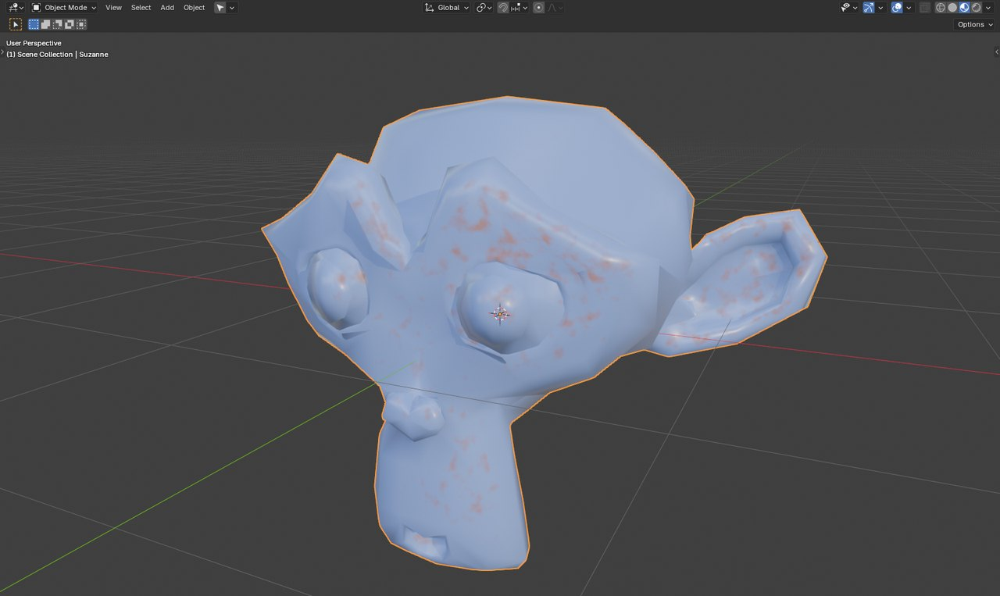
- Select Suzanne.
- Open the "Smart Shader" tab > "PBR Material Generation".
- Set "Preset Category" to "FX & Weathering".
- In "Preset", choose "Rusted Paint".
- Click "Create Preset Look Material".
What to look for: The light gray surface has changed to light blue paint with faint reddish-brown rust spots showing on it (they appear mostly around the eyes and on the ears). The nodes were built by the preset, so you can adjust the colors and other settings later in the Shader Editor.
ExampleAnime-Style Shading with "Create Toon Material"(demonstrated on Suzanne)
Create a material with clearly stepped, anime-like shading instead of smooth shading.
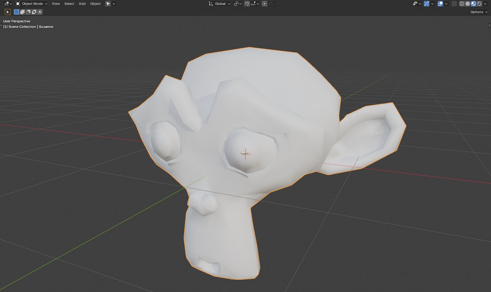
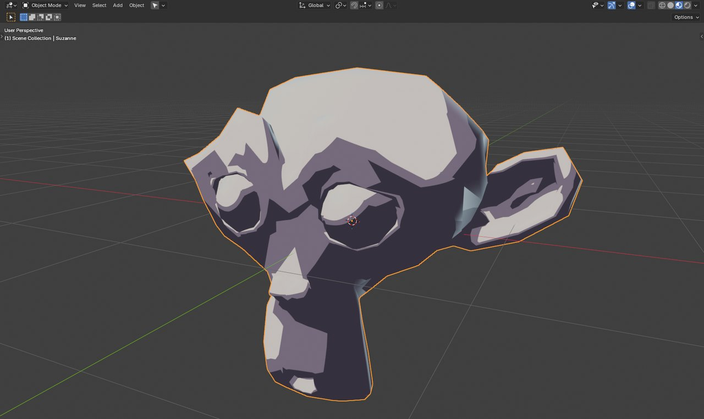
- Select Suzanne.
- Open the "Smart Shader" tab > "Smart Toon".
- Click "Create Toon Material".
What to look for: The shading, which used to darken smoothly, is now clearly divided into steps: light, mid, and dark. You can change the amount of highlight and rim light in the "Highlight" and "Rim Light" fields under the same section header.
2. Key Features
This chapter walks through the features unique to this add-on, using numbered callouts on each figure. The numbers in a figure match the numbered list below it. Click a figure to enlarge it. Each individual setting is described under its own heading in Chapter 5.
2-1. Image List of PBR/FX PresetsTop Selling Point
When you click "Choose from Preview Images" in "PBR Material Generation", all 242 PBR, stylized, and FX presets are lined up as sample images of Suzanne with the material applied. The sample images ship with the add-on, so you can compare them all right after opening. When you click an image, a material is created with that preset, applied to the selected objects, and the list closes. You can choose a material by look alone, without knowing its name.
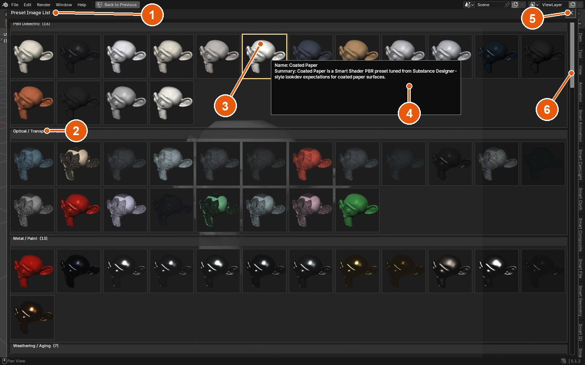
- 1Image List: All 242 are lined up by genre
- 2Genre Header: From here down is the next genre
- 3Sample Image: Click to create a material with this preset and apply it to the selected objects
- 4Name and Summary: The name and description of the image under the mouse
- 5Close: You can also close it with Esc or a right click
- 6Scrollbar: It also moves with the mouse wheel
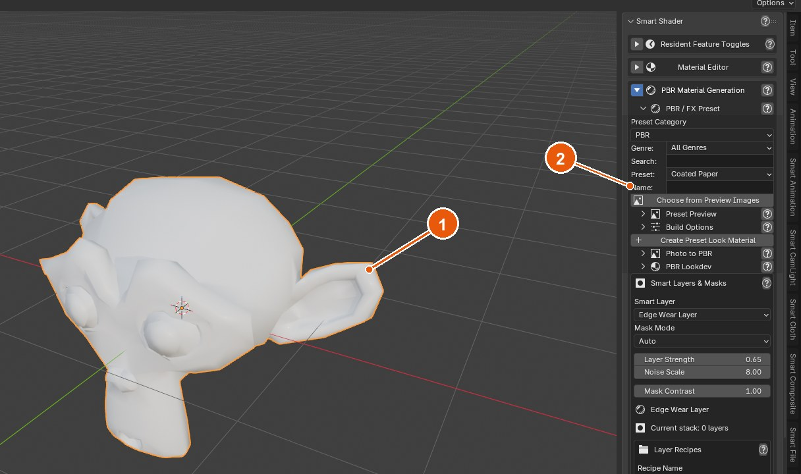
- 1Applied Material: Created from the preset of the image you clicked
- 2"Preset" Field: It has switched to the preset of the image you clicked
- Select the objects you want to give a material (you can select two or more).
- Open "PBR Material Generation" and click "Choose from Preview Images".
- Click a sample image in the list. The material is created and applied on the spot, and the list closes.
- The list always shows all 242 presets, regardless of the "Preset Category", "Genre", and "Search" filters.
- The sample images are bundled, so it opens without waiting for images to be generated.
- The material has already been created the moment you click an image. If you click "Create Preset Look Material" again, a second copy of the same material is created.
- If you have two or more objects selected, the material is applied to all of them at once.
- The "Image List" inside "Preset Preview" only selects the preset and does not create a material.
Settings in detail: 5-3. PBR Material Generation
2-2. Narrow Down Candidates with SearchSee the Figures
When you know the name or the type of material, enter a word in "Search" to narrow down the candidates shown in the "Preset" dropdown. Search looks through preset names, summaries, tags, and genre names, in either Japanese or English. The figure shows "Metal" entered (in Japanese). Note that the image list itself has no search. What search narrows down is the candidates in the "Preset" dropdown.
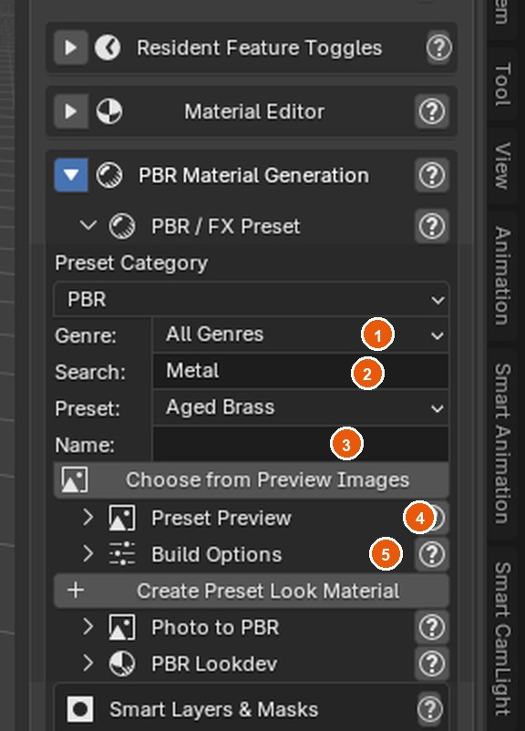
- 1Genre: Narrow the candidates by type
- 2Search: Narrow the candidates by words
- 3Preset: A dropdown to choose from the narrowed candidates
- 4Choose from Preview Images: Opens the image list of all 242 presets
- 5Preset Preview: The sample image of the selected preset
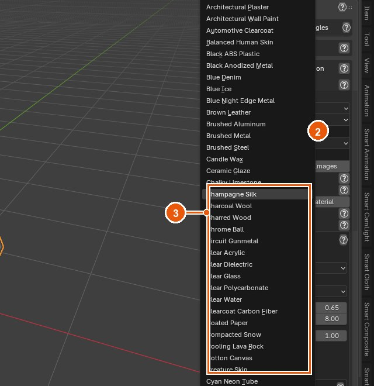
- 2Search Field: "Metal" was entered
- 3Narrowed Candidates: Only presets whose name or description contains "Metal" are listed
- Enter a word in "Search" (for example, metal or wood).
- Open the "Preset" dropdown and choose from the narrowed candidates.
- Click "Create Preset Look Material".
Settings in detail: 5-3. PBR Material Generation
2-3. Smart ToonSee the Figures
When you click "Create Toon Material", the selected object gets anime-style stepped shadows (the top 2 figures). The direction of the shadows is decided by the position of an Empty that you place in place of a light (the bottom 2 figures). The direction the Empty's arrow points does not matter. After moving the Empty, click "Sync Direction From Selection" again.
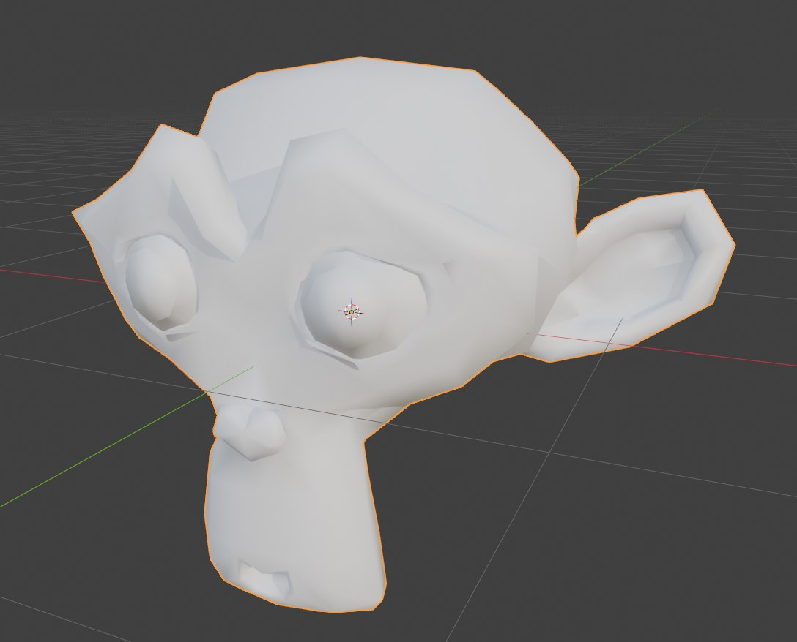

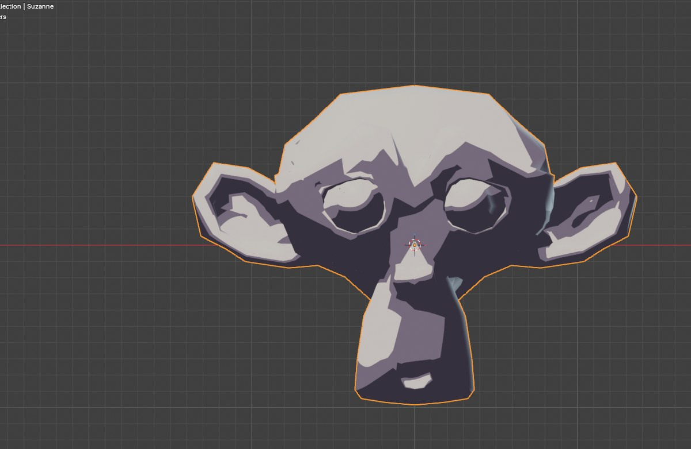
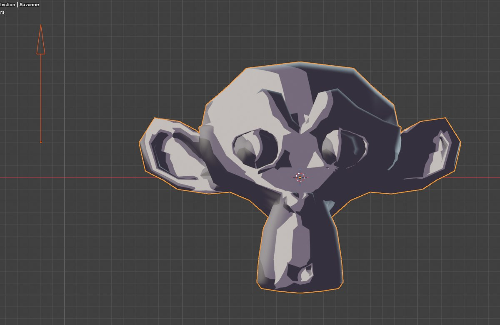
Settings in detail: 5-4. Smart Toon
2-4. 3ds Max-Style Material EditorSee the Figures
Arrange frequently used materials in slots (a shelf) and apply them to the selected objects with a single button. You can also click an object in the 3D Viewport and bring the material of that face into a slot. Figure 1 shows a vertically long panel folded into 2 columns (the right column continues below the left column).
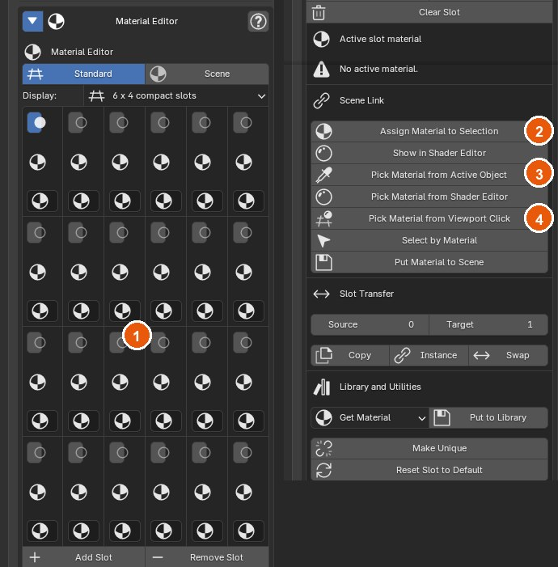
- 1Shelf: The default is 24 slots in 6×4. With "Display", you can also change it to 3×2, 5×3, or an unlimited list
- 2Assign Material to Selection: In Object Mode it applies to the active slot of the selected objects, and in Edit Mode to the selected faces
- 3Pick Material from Active Object: Brings the active object's material into the current slot
- 4Pick Material from Viewport Click: After clicking it, click an object in the 3D Viewport and the material of the face you hit goes into the current slot

- Click a slot on the shelf to choose the material you want to apply.
- In the 3D Viewport, select the objects you want to apply it to (faces, in Edit Mode).
- Click "Assign Material to Selection".
Settings in detail: 5-2. Material Editor
3. Getting Started
How to install the add-ons, how to change the interface language, and how the N panel and the "?" help buttons work in every add-on are covered in the "SmartTools Overall Specification". Please read chapters 2 to 5 there first.
| ZIP to install | SmartShaderSuite_1.0.0.zip |
|---|---|
| Name shown in Blender | Smart Shader |
| Supported Blender | 5.1.2 |
4. Where to Find It
It is in the "Smart Shader" tab of the Sidebar (N panel) in the 3D Viewport. The same panel also appears in the Sidebar of the Shader Editor, Image Editor, Video Sequencer, Movie Clip Editor, Dope Sheet, Graph Editor, NLA Editor, Text Editor, File Browser, and Spreadsheet.
| Editors | 3D Viewport, Node Editor, Image Editor (UV Editor), Video Sequencer, Movie Clip Editor, Dope Sheet, Graph Editor, NLA Editor, Text Editor, File Browser, Spreadsheet |
|---|---|
| Tab | Smart Shader |
| Mode | Object Mode |
- Press N in the 3D Viewport to open the Sidebar (for details on opening it, see the "How to Open the N Panel" chapter of the SmartTools Overall Specification).
- Click "Smart Shader" in the tabs lined up vertically at the right edge of the Sidebar.
- Click the triangle at the left of the section header you want to use to open it. The "?" at the right end of a section header shows an explanation of that section (for how to use the "?" help button, see the "? Help" chapter of the SmartTools Overall Specification).

5. Features
Each heading is explained in order from the top of the panel. Click the "?" to the right of a heading to show the same explanation in Blender. The blue "Example" boxes show real operations on simple models such as Suzanne, with the 3D Viewport before and after.
5-1. Always-on Toggles
Turn on or off, all in one place, only the features that keep running in the background without a button press. Turn them on only when you need them.
LocationThis is the topmost section header of the panel. Open it with the triangle at the left.
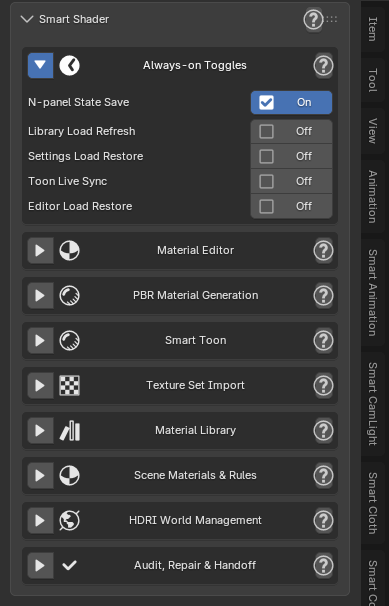
| Item | What it does |
|---|---|
| N-panel State Save | Saves changes to the panel settings immediately to a file in Blender's configuration folder. When this is off, nothing is written automatically afterward. |
| Library Load Refresh | Automatically updates the material library list after a .blend file is opened. Leaving it off keeps startup and file opening lighter. |
| Settings Load Restore | Restores each feature's settings when a file is opened. The same settings are also restored by "N-panel State Save", so you can normally leave this off. |
| Toon Live Sync | Keeps the Smart Toon sync process running in the background. Even when it is off, the rebuild and render preparation you run with buttons still work. |
| Editor Load Restore | Automatically restores the Material Editor settings and named slots after a file is opened. |
5-2. Material Editor
A tool for arranging frequently used materials in slots and assigning them right away to the objects you choose. You can also browse the materials in your scene as a list.
LocationThis is the section header right below "Always-on Toggles".
| Item | What it does |
|---|---|
| "Standard" / "Scene" | Switch the display with the tabs at the top. "Standard" is the slot view. "Scene" is a list of the materials used by the objects in the scene. |
| Initialize Slots | Appears only when there are no slots yet. Click it to create the slots. |
| Display | Choose how the slots are arranged. The choices are "3 x 2 compact slots", "5 x 3 compact slots", "6 x 4 compact slots", and "Unlimited list". |
| Slot Number Buttons | Click the round button at the upper left of each slot to select that slot. When the panel is wide, the buttons also show numbers (01, 02, ...). In the field below, you can choose the material to put in the slot. |
| Add Slot / Remove Slot / Clear Slot | Three buttons: add a slot, remove a slot, and remove the material inside a slot. |
| Active slot material | Shows the material name, status, and user count (the number of places it is used) for the selected slot. Click the name button to rename it. |
| Effects Channel ID | Sets the material's Pass Index (a number from 0 to 15). Use it in compositing to separate each material. |
| Scene Link | "Assign Material to Selection" applies the selected slot's material to the selected objects. "Show in Shader Editor" opens the nodes, and "Pick Material from Active Object", "Pick Material from Shader Editor", and "Pick Material from Viewport Click" bring a material into the slot. "Select by Material" selects the objects or faces that use the same material, and "Put Material to Scene" returns it to the scene. |
| Slot Transfer | Choose the "Source" and "Target" slot numbers, then use "Copy", "Instance" (share the same material), or "Swap". |
| Library and Utilities | These are "Get Material", "Put to Library" (save as a .blend file), "Make Unique" (stop sharing and make your own copy), and "Reset Slot to Default". |
| "Scene" Tab | "Scene Materials" shows the materials used in the scene as a list with names and use counts. Names are not translated and appear as they were given. You can search and sort with the fields at the top. When you select a material in the list, "Put into Active Slot" and "Show in Shader Editor" appear under "Selected Material". Under "Objects Using This Material", you can select the objects that use it one by one, or all at once with "Select All Objects Using This Material". The figure for this view is in "Other Screens" at the end of chapter 5. |
- Click a slot number button to select the slot you want to use.
- In the 3D Viewport, select the objects you want to assign the material to.
- Click "Assign Material to Selection" under "Scene Link".
ExampleApply a Material from a Slot to All Selected Objects at Once(demonstrated on Two Suzannes)
Put frequently used materials in slots, and you can apply them to the selected objects with a single click.
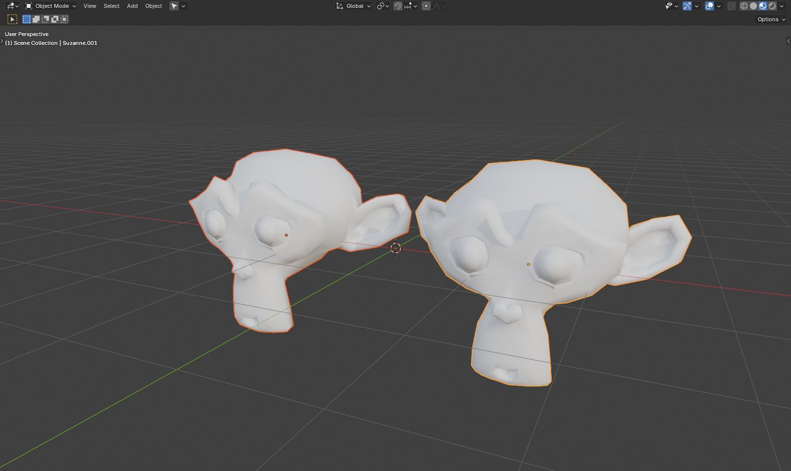
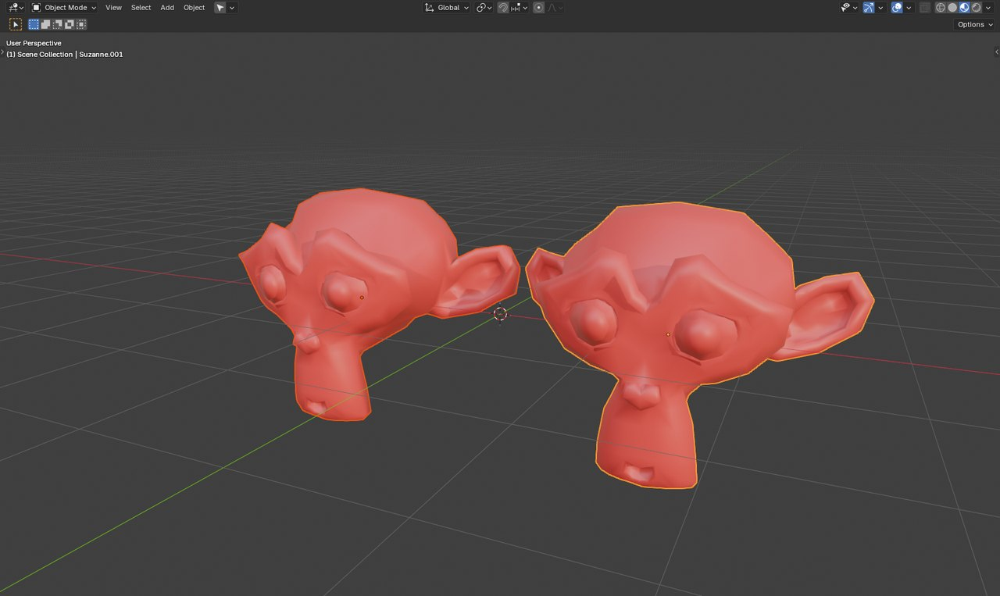
- Select both Suzannes.
- Open the "Smart Shader" tab > "Material Editor" (if this is the first time, click "Initialize Slots").
- Click a slot number button to select a slot, and set the Red Material in the field below.
- In "Scene Link", click "Assign Material to Selection".
What to look for: Both Suzannes, which were gray, now have the same Red Material. The material is shared, so if you edit it later, both of them change.
5-3. PBR Material Generation
Creates materials from PBR (a look close to how light behaves in the real world) presets and from stylized and FX presets. The feature that creates base images from a photo, and the layers that add wear, rust, and so on, are also here.
LocationThis is the section header below "Material Editor". When opened, it has the "PBR / FX Preset" field and the "Smart Layers & Masks" box (which contains "Layer Recipes").
| Item | What it does |
|---|---|
| Preset Category / Genre / Search | Fields that narrow down the candidates shown in the "Preset" dropdown. "Search" looks through preset names, summaries, tags, and genre names, in either Japanese or English. The image list for "Choose from Preview Images" always shows all 242 presets, regardless of the filtering here. |
| Preset | A dropdown for choosing the preset to create. Only the candidates narrowed down by the fields above are listed. |
| Name | The name of the material to create. If it is empty, the preset's name is used. |
| Choose from Preview Images | Opens a list of sample images for all 242 presets. When you click an image, a material is created with that preset, applied to the selected objects, and the list closes (when "Assign to Selected" under "Build Options" is off, it is not applied and becomes the active material instead). You do not need to click "Create Preset Look Material". |
| Preset Preview | A field that shows a sample image of the selected preset (an image of Suzanne with the material applied). Clicking an image in the "Image List" here only selects the preset and does not create a material. "Render Preset Previews" recreates the sample images. It is closed at first. |
| Build Options | Switches "Assign to Selected" (apply to the selected objects after creating), "Fake User" (keep the material from being deleted on save even if it is unused), and "Mark Asset" (make it usable in the Asset Browser). When an object has two or more material slots, the "Apply Slot" buttons also appear. It is closed at first. |
| Create Preset Look Material | Creates a new material from the preset chosen in the "Preset" field. When "Assign to Selected" is on, it is applied directly to the selected objects. Do not click it after clicking an image in the "Choose from Preview Images" list, because the material has already been created (clicking it would make a second copy of the same material). |
| Photo to PBR | Set "Photo Source", "Output Folder", "Max Analyze Size", "Detail Normal", and "Detail Strength", then click "Create Photo PBR" to create base images from a single photo and build a material. It is closed at first. |
| PBR Lookdev | One of the bundled features. When opened, only the "Load" button appears at first. Click it to make the feature available. |
| Smart Layers and Masks | Choose "Layer", "Mask Mode", "Layer Strength", "Noise Scale", and "Mask Contrast", then click "Apply Layer" to layer wear, rust, moss, snow, wetness, dust, and so on onto the material. The layers go onto the selected object's current material (only when the object has no material do they go onto the material in "Target Material"). The row below shows the current number of layers. "Add Mask Utilities" adds helper nodes for manual adjustment without changing the look. |
| Layer Recipe | Save a combination of layers as a "Recipe Name" ("Save Recipe"), choose it in "Saved Recipe", and use "Apply Recipe" on another material. There are also "Delete Recipe", "Export Recipe Library", "Import Recipe Library", and "Repair Recipe Library". |
- Select the objects you want to give a material. You can select two or more.
- Click "Choose from Preview Images", then click a sample image in the list. A material is created on the spot, applied to the selected objects, and the list closes (do not click "Create Preset Look Material").
- To search by name, enter a word in "Search" to narrow down the "Preset" candidates, choose one, then click "Create Preset Look Material".
ExampleCreate a "Rusted Paint" Material with One Click(demonstrated on Suzanne)
You don't need to build material nodes from scratch: choose a preset and click "Create Preset Look Material", and a finished material is created and applied to the selected objects.
- Select Suzanne.
- Open the "Smart Shader" tab > "PBR Material Generation".
- Set "Preset Category" to "FX & Weathering".
- In "Preset", choose "Rusted Paint".
- Click "Create Preset Look Material".
What to look for: The light gray surface has changed to light blue paint with faint reddish-brown rust spots showing on it (they appear mostly around the eyes and on the ears). The nodes were built by the preset, so you can adjust the colors and other settings later in the Shader Editor.
ExampleApply a Metallic Look with "Brushed Metal"(demonstrated on Suzanne)
Realistic PBR presets are created with the same steps. Here you apply a metal material with a brushed finish (fine streaks on the surface).

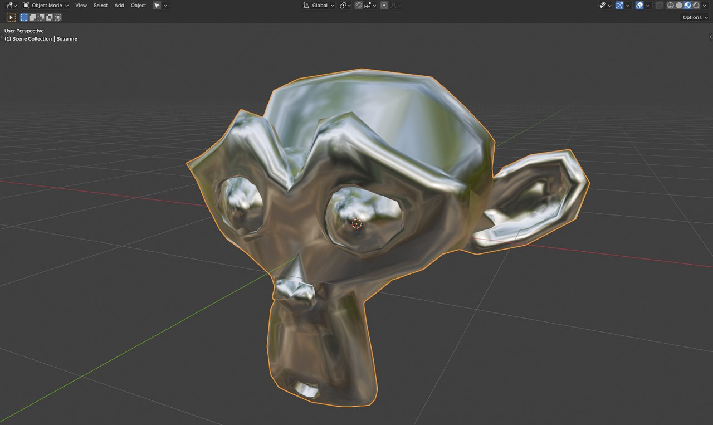
- Select Suzanne.
- Open the "Smart Shader" tab > "PBR Material Generation".
- Set "Preset Category" to "PBR".
- In "Preset", choose "Brushed Metal".
- Click "Create Preset Look Material".
What to look for: The light gray surface has turned to metal, and it now reflects the surrounding scenery of Material Preview.
ExampleA Hologram-Like Look with "Hologram Film"(demonstrated on Suzanne)
The presets also include non-realistic looks meant for artistic effect. Choose them from "Stylized".

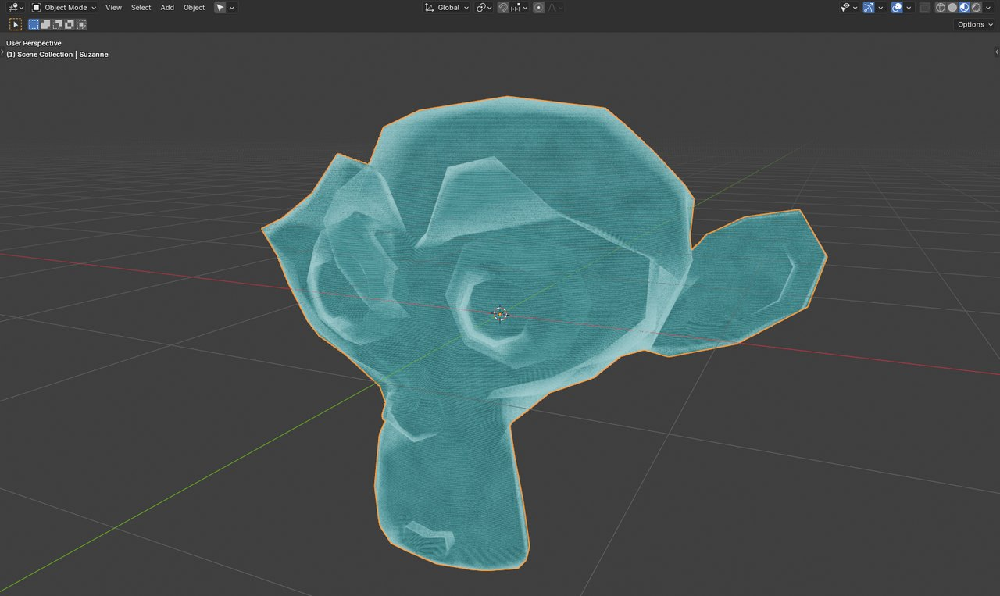
- Select Suzanne.
- Open the "Smart Shader" tab > "PBR Material Generation".
- Set "Preset Category" to "Stylized".
- In "Preset", choose "Hologram Film".
- Click "Create Preset Look Material".
What to look for: Suzanne has turned a translucent light blue and now looks like a hologram.
ExampleAdd Snow on Top of the Current Material with "Smart Layers"(demonstrated on Suzanne)
Layer snow, rust, moss, dust, and more on top without rebuilding the material. Snow collects on upward-facing surfaces.
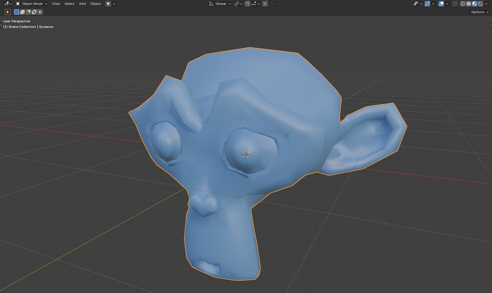
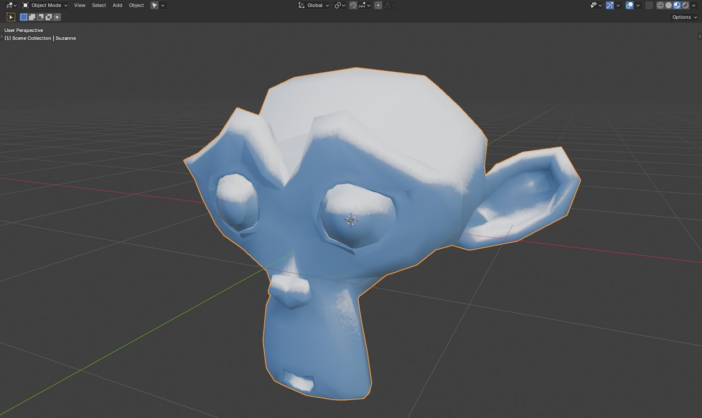
- Select Suzanne.
- Look at the "Smart Shader" tab > "PBR Material Generation" > "Smart Layers and Masks".
- Set "Layer" to "Snow Layer".
- Set "Layer Strength" to 1.00.
- Click "Apply Layer".
What to look for: Only the upward-facing areas, such as the top of the head, the brows, and the rims of the ears, have turned white. Areas facing sideways or downward keep the original blue. Because "Non-Destructive" is on, the original material is kept separately, and a copy with the snow layered on it is applied to Suzanne.
ExampleEven After Creating Something Else, Layers Go on the Selected Object's Current Material(demonstrated on Two Suzannes)
After creating a preset material on the left object, select the right object and click "Apply Layer". The layer is added on top of the current material of the right object you just selected.
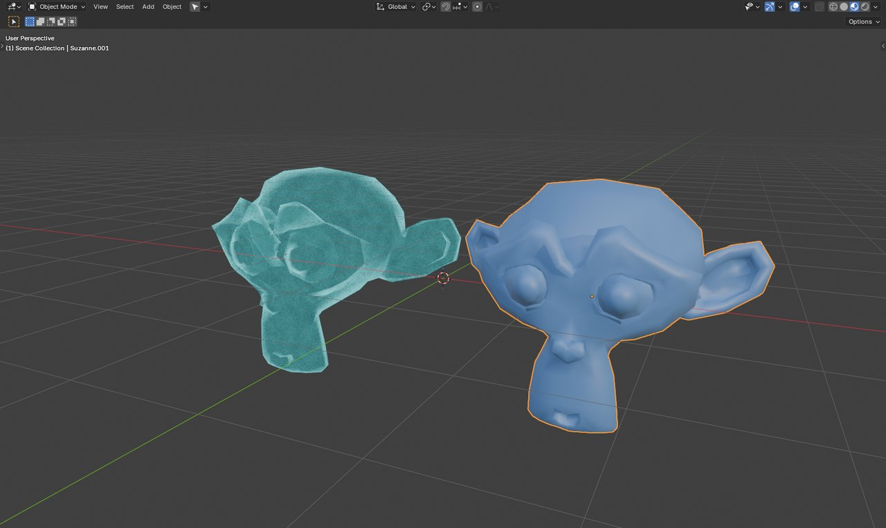
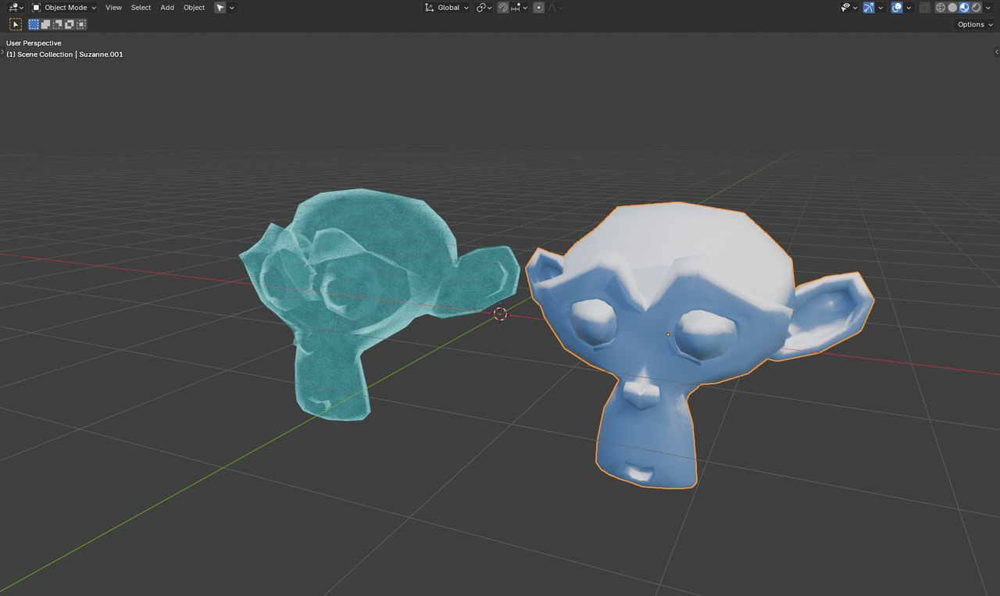
- Select the left Suzanne and create a preset material in "PBR Material Generation".
- Select the right Suzanne, which has the Blue material.
- In "Smart Layers and Masks", set "Layer" to "Snow Layer".
- Click "Apply Layer".
What to look for: The right Suzanne stays blue, and only its upward-facing surfaces have turned white. The left Suzanne's material does not change.
5-4. Smart Toon
Creates and adjusts anime-style stepped-shadow materials. Here you set the colors of the shadow steps, highlights, rim lights (lights that make the outline glow), bumps, lighting direction, and cast shadows. When you change a setting, it is reflected immediately in the generated shader nodes.
LocationThis is the section header below "PBR Material Generation". When there is no material, only the "Target" field appears.
| Item | What it does |
|---|---|
| Target | Shows the name of the selected object and its current material. "Create Toon Material" creates a new toon material, and "Rebuild Shader Nodes" recreates the nodes. When an object has two or more material slots, the "Apply Slot" buttons also appear. |
| Base | With "Base Source", choose whether the base is "Zone Colors" or "PBR/FX Preset". When you have selected a PBR material that is not a toon material, "Add Smart Toon Effects to This PBR Material" appears instead. |
| Zone Map | "Zone Count" sets the number of shadow steps. "Zone Border Sharpness" adjusts how crisp the boundaries between steps are, "Zone Ramp" adjusts the color band, and "Zone Borders" adjusts the positions where the steps switch. In fields such as "Zone 1 Map", you set the color for each step (such as "Zone 1 Color") or an image. |
| Manual Node Settings | A button in each field such as "Zone Map", "Highlight", "Rim Light", and "Bump". When on, Smart Toon no longer rewrites that field's nodes automatically, and you can edit them by hand in the Shader Editor. When you turn it back off, they are rebuilt from the panel settings. |
| Highlight | Turn it on with "Enable Highlight", then adjust the highlight's color, range, and strength. |
| Rim Light | "Rim Light Count" sets the number of outline lights, and in fields such as "Rim Light 1" you set the color and direction of each one. When you choose the mode that uses individual lights, "Separate Rim Light Source" appears, and "Use Selected Rim Light" lets you specify a Blender light. |
| Bump | Turn it on with "Enable Bump" to bend the toon shadows with the bumps of an image. "Bump Application Targets" lets you choose where it takes effect. |
| Gradation Offset | Turn it on with "Enable Offset Map" to use an image to shift part of the area to a darker or brighter step. Use "Apply to Zone Color", "Apply to Highlight", and "Apply to Rim Light" under "Offset Targets" to choose where it takes effect. |
| Lighting | Under "Lighting Mode", use "Lighting Source" to choose how the light direction is determined: "Toon Direction" or "Blender Standard Lighting". With "Blender Standard Lighting", specify a "Standard Light Object" or click "Use Selected Light". With "Toon Direction", the "Lighting Direction" field appears. Click "Create Direction Empty" to create an arrow Empty, move it, then click "Sync Direction From Selection" and light comes from that direction (you can also sync from a selected Sun light or other light). Adjust brightness with "Emission Strength" under "Output". |
| Cast Shadow | Shows shadows cast by other objects not as black shadows but in the colors of the zone steps. Turn it on with "Use Standard Light Cast Shadow", widen the area treated as shadow with "Cast Shadow Range Offset", and set how crisp the boundary is with "Cast Shadow Sharpness". The cast shadow rebuild operation enables the receiver settings of the active Smart Toon material and updates the nodes. It does not change the scene's render engine, device, lights, object visibility, or viewport settings. Check and set these in Blender. |
| Copy / Paste | Use "Copy Smart Toon Settings" to copy the settings, select another material, and use "Paste Smart Toon Settings" to paste them. "Clear Smart Toon Clipboard" erases what was copied. When nothing has been copied, "Clipboard is empty." appears. |
- Select a mesh (an object made of faces).
- Click "Create Toon Material" under "Target".
- Set the number of steps and their colors in "Zone Map".
- Adjust "Highlight" and "Rim Light" as needed.
ExampleAnime-Style Shading with "Create Toon Material"(demonstrated on Suzanne)
Create a material with clearly stepped, anime-like shading instead of smooth shading.
- Select Suzanne.
- Open the "Smart Shader" tab > "Smart Toon".
- Click "Create Toon Material".
What to look for: The shading, which used to darken smoothly, is now clearly divided into steps: light, mid, and dark. You can change the amount of highlight and rim light in the "Highlight" and "Rim Light" fields under the same section header.
ExampleChange the Toon Shading Direction by Moving an Arrow Empty(demonstrated on Suzanne)
Even without using scene lights, you can set the shading direction from the position of an Empty (a marker with no shape).
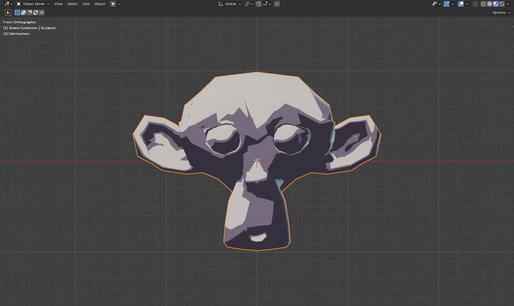
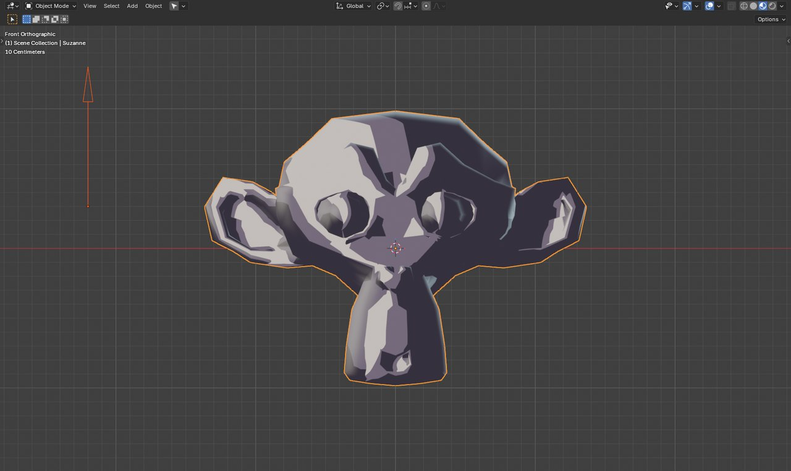
- Select Suzanne and click "Create Toon Material" in "Smart Toon".
- Under "Lighting" > "Lighting Direction", click "Create Direction Empty".
- Move the arrow Empty that was created toward the side you want the light to come from.
- Select Suzanne as well, and click "Sync Direction From Selection".
What to look for: The arrow on the left is the Empty that was moved. The light, which was coming from above, now comes from the left, where the Empty is, and the right side of the face has taken on the shadow color. The light direction is set by where the Empty is placed; the direction of the arrow does not matter. After moving the Empty, click "Sync Direction From Selection" again.
5-5. Texture Set Import
Starting from a single folder, creates materials from a set of textures, relinks broken-link images, corrects color spaces, wires up automatically, and cleans up unused data.
LocationThis is the section header below "Smart Toon". When opened, it has the "Relink and Cleanup" box.
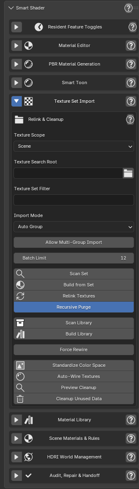
| Item | What it does |
|---|---|
| Texture Scope | Choose the range of materials processed by "Relink Textures" and others from "Active", "Target", and "Whole scene". |
| Texture Search Root | The folder to search for textures. Folders inside it are searched too. |
| Texture Set Filter | Text used to narrow down a large folder to a single set by name. |
| Import Mode | Choose from "Auto Group", "Filter Only", and "All Matching". For first-time users, "Auto Group" is the safest. |
| Allow Multi-Group Import / Batch Limit | Whether to handle multiple sets at once, and the upper limit on how many are created at a time. |
| Scan Set / Build from Set | "Scan Set" lets you check in advance which images will be chosen. "Build from Set" creates a new material from that set, wires it up, and applies it to the selected objects. |
| Relink Textures | Searches the folder for broken-link images by the same file name and relinks them. |
| Scan Library / Build Library | Lists the multiple texture sets in the folder and creates materials from them in bulk. |
| Force Rewire | Whether to rewire even places that are already connected. |
| Standardize Color Space | Changes images used for data, such as roughness and normals, to Non-Color (a setting that does not treat them as color). |
| Auto-Wire Textures | Recognizes each image's purpose from its image node name and connects the missing links to the Principled BSDF (the standard material node). |
| Preview Cleanup / Cleanup Unused Data | Cleans up unused materials, images, and node groups. Check the candidates to be deleted in the preview first. When "Recursive Purge" is on, it cleans up more deeply. |
- Specify the folder that contains the textures in "Texture Search Root".
- Click "Scan Set" and check the images that will be chosen.
- Click "Build from Set".
ExampleCreate a Pre-Wired Material from a Texture Folder(demonstrated on Cube)
Specify a folder that contains color, roughness, normal, and other images, and the add-on tells which image is which from the file names and assembles the material.
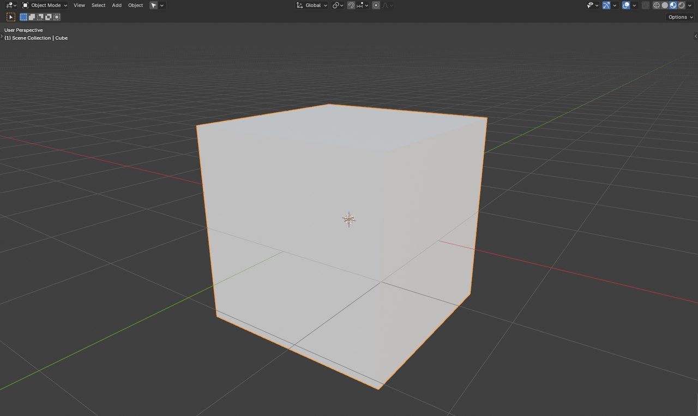
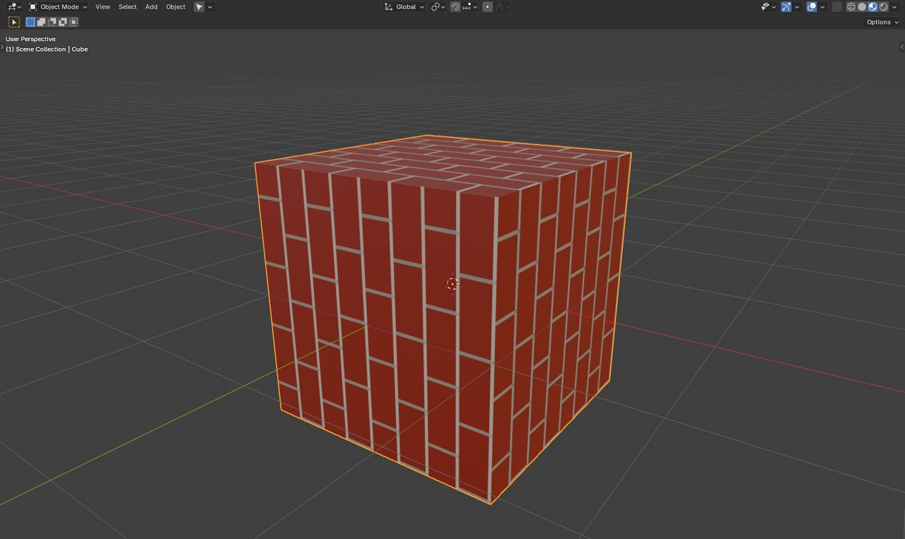
- Select the cube.
- Open the "Smart Shader" tab > "Texture Set Import".
- In "Texture Search Root", specify the folder that contains the images (here, three images whose names end in _basecolor, _roughness, and _normal).
- Click "Scan Set" and check which images will be used.
- Click "Build from Set".
What to look for: The gray cube now has a brick pattern. All three images (color, roughness, and normal) are connected to the material automatically, so you don't need to build the nodes yourself.
5-6. Material Library Management
Saves, searches, and applies materials you want to reuse. There is also a field for searching presets and saved items together.
LocationThis is the section header below "Texture Set Import". When opened, it has the "Search & Libraries" field, which contains "Smart Search", "Material Catalog", "Custom Library", and "Material Library".
| Item | What it does |
|---|---|
| Smart Search | Enter a word in "Smart Search" and choose from "Search Result". "Use Result" reflects it in the selection field, and "Apply Result" creates or restores it directly. |
| Material Catalog | Give a "Catalog Name" and "Catalog Tags", then use "Save Entry" to save the selected object's current material (or the material in "Target Material" when there is none). Choose with "Catalog Search" and "Saved Catalog Entry", and use "Apply Entry" to recreate the same material and apply it to the selected objects. There are also "Delete Entry" and library export, import, and repair (choose how to read with "Catalog Import Mode"). |
| Custom Library | Set "Custom Save Name" and "Library Import Mode", then export, import, and repair the custom preset library. |
| Material Library | A bundled feature that uses a material library in a .blend file. At first, only the "Load" button appears. After loading, the "Library Folder", "Manual Refresh", and "Main Library Tools" section headers and the "Additional Commands" box appear. In "Main Library Tools", create a library with "Create Library" under "Library", and add the current material with "Add Active Material" under "Command". Choose from the "Material List" and click "Apply Selected Material" to apply it to the selected objects. To clear the category, choose "Show All Categories" in the "Category" menu and click "Set Category". |
ExampleSave a Favorite Material to the Catalog and Recall It on Another Object(demonstrated on Two Suzannes)
Save a material you made under a name, and you can recreate the same material on other objects or in later work.
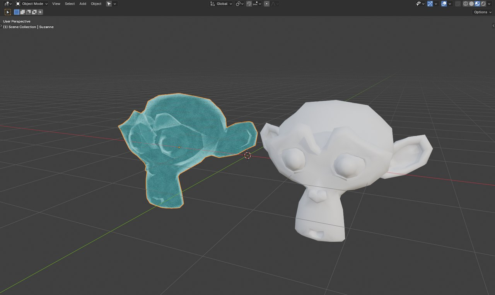
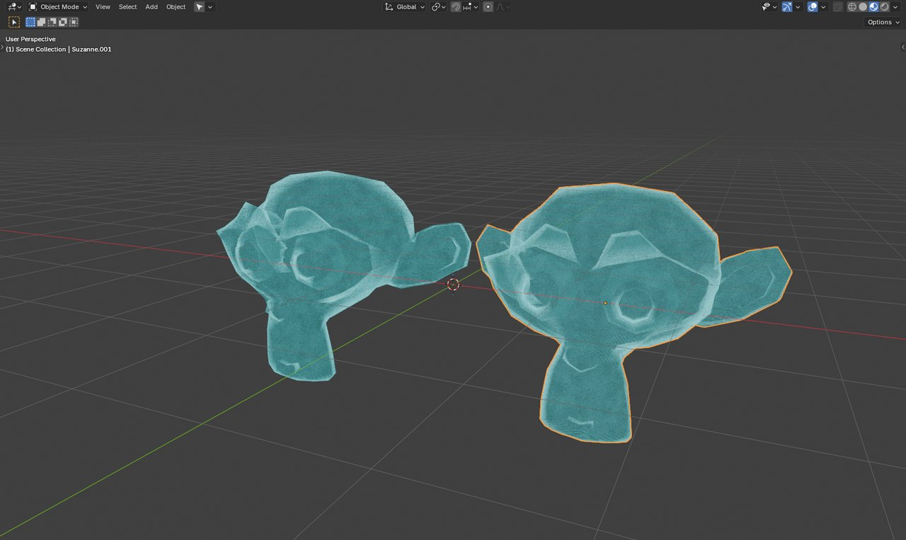
- Select the Suzanne that has the material.
- Open "Material Library Management" > "Search & Libraries" > "Material Catalog".
- Enter a "Catalog Name" and click "Save Entry".
- Select the other Suzanne.
- In "Saved Catalog Entry", choose the name you saved, and click "Apply Entry".
What to look for: The gray Suzanne on the right now has the same hologram look as the left one. A new material is rebuilt from the saved contents and applied to the selected object.
5-7. Scene Material Organization
Choose a target material, then assign it, select the objects using it, duplicate it, replace it, and more. Rules that assign materials in bulk by name conditions, and variants that save the assignments for the whole scene, are also here.
LocationThis is the section header below "Material Library". It contains "Target Operations", "Scene Materials & Rules" ("Scene Material Index", "Compare & Replace", "Assignment Rules"), and "Scene Variants".
| Item | What it does |
|---|---|
| Active Object Material | Shows the material of the selected object. "Choose Existing Material" and "Create Material" let you swap or create a new one. |
| Target Material | Decide the material to operate on with "Choose Existing Material" or "Use Active Material". "Operations on Target Material" and "Compare & Replace" in this section header act on the material placed here. Operations that change an object's material, such as "Apply Layer", act on the selected object's current material, and use the material here only when the object has no material. The name of a created material is also entered automatically, for example when creating from a preset. |
| Name / Assign Mode | Decide the name used for renaming, and which slot to put the material in ("Active Slot", "First Slot", "Add", "All Slots"). |
| Non-Destructive | When on, a duplicate is made before overwriting, and the original material is kept. |
| Operations on Target Material | These are "Set Active Target", "Assign to Selected", "Select Users", "Unassign Material", "Duplicate Target", "Localize Target", "Localize Per Object", "Rename Target", "Rebuild Target", "Rebuild Managed Materials", "Cleanup Slots", "Merge Duplicates", "Protect Target Bundle", and "Clear Protection". Localizing means duplicating a shared material and making it exclusive to that object. |
| Scene Material Index | Lists the materials in the scene with "Index Search", "Index Scope", and "Sort". Use "Use Index Pick" to make one the target, and "Select Index Users" to select the objects using it. |
| Compare & Replace | Choose "Compare Source" and "Target Material", check the differences with "Preview Diff", then swap with "Replace with Target". With "Replace Scope", choose either "Selected objects" only or "Whole scene". |
| Assignment Rules | Write a "Rule Name" with "Object Match", "Collection Match", and "Current Material Match", then click "Save Rule". In the conditions you can use * as in Hair*. Turn on "Regex" to specify them with a pattern. With "Rule Scope", choose either the selected objects only or the whole scene. Choose from "Saved Rule", check which objects match with "Preview Rule", then click "Apply Rule". There are also "Delete Rule", "Export Rule Library", "Import Rule Library", and "Repair Rule Library". |
| Scene Variants | Save the material assignments for the whole scene and the HDRI state under a "Variant Name" ("Save Variant"), choose from "Saved Variant", and restore with "Apply Variant". Delete the ones you do not need with "Delete Variant". In "Scene Variant Library", you can export ("Export Variant Library"), import ("Import Variant Library"), and repair ("Repair Variant Library") the saved variants in bulk. |
ExampleApply a Material at Once Only to Objects That Match a Name Condition(demonstrated on Three Suzannes)
Save a condition such as "objects starting with Hair" as a rule, and apply a material only to the objects that match. In scenes with many objects, this saves you from selecting them one by one.
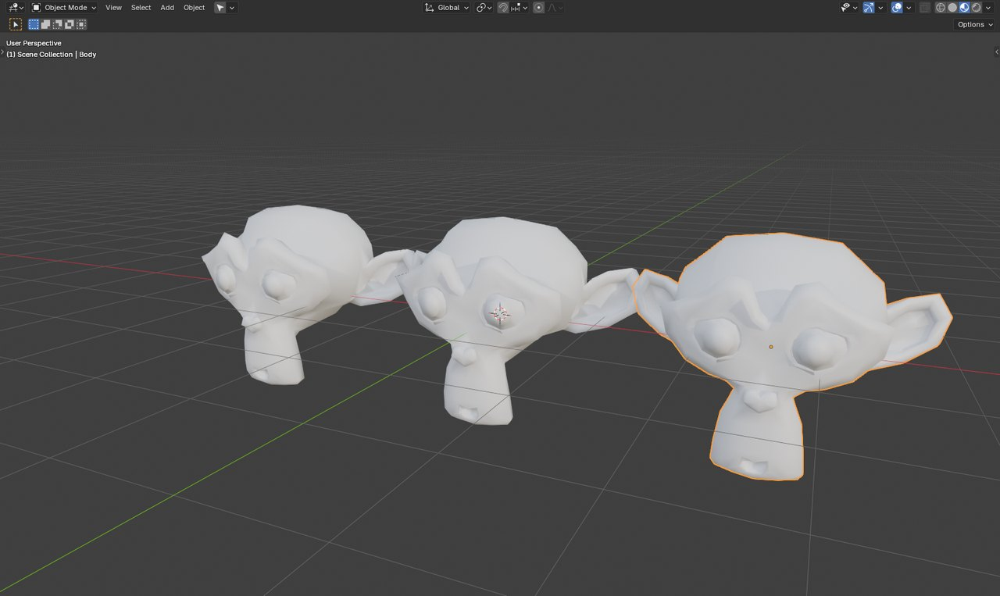
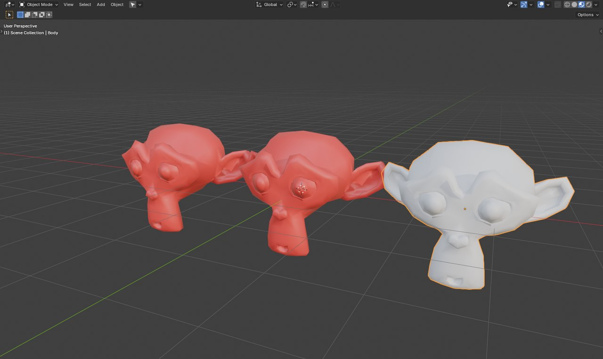
- Open "Scene Material Organization" and choose the material to apply in "Target Material".
- Open "Scene Materials & Rules" > "Assignment Rules".
- Enter Hair* in "Object Match", and set "Rule Scope" to "Whole scene".
- Click "Save Rule".
- Check which objects match with "Preview Rule", then click "Apply Rule".
What to look for: Only the two on the left and in the middle, whose names start with Hair, have turned red. The one on the right, which has a different name, stays gray.
5-8. HDRI World Management
Creates a background and lighting from an HDRI image (an image that records the surrounding scene together with its brightness).
LocationThis is the section header below "Scene Materials & Rules". When opened, it has the "World & HDRI" field.
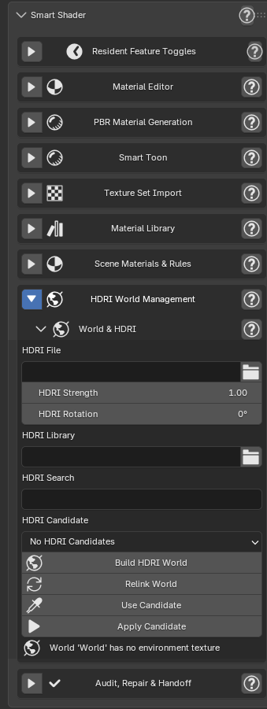
| Item | What it does |
|---|---|
| HDRI File | Specify the HDRI image file to use. |
| HDRI Strength / HDRI Rotation | The brightness of the background and its rotation. After changing them, build again. |
| HDRI Library / HDRI Search / HDRI Candidate | Specify the folder that holds HDRIs, search by name, and choose a candidate. |
| Build HDRI World | Creates the current scene's world (background and ambient light) from the "HDRI File" image and the "HDRI Strength" and "HDRI Rotation" values. |
| Relink World | When the world's HDRI cannot be found, searches the "HDRI Library" folder and relinks it. |
| Use Candidate / Apply Candidate | "Use Candidate" puts the chosen candidate into the "HDRI File" field. "Apply Candidate" applies it directly to the world. |
- Specify an image in "HDRI File".
- Set "HDRI Strength" and "HDRI Rotation".
- Click "Build HDRI World".
- To change how it looks, change the values and click "Build HDRI World" again.
ExampleCreate the Background and Reflections from an HDRI Image with "Build HDRI World"(demonstrated on Suzanne)
Build a world (the background and environment lighting) from an HDRI image that captures the surrounding scenery. Reflections on metal and other surfaces also change to match the scenery.
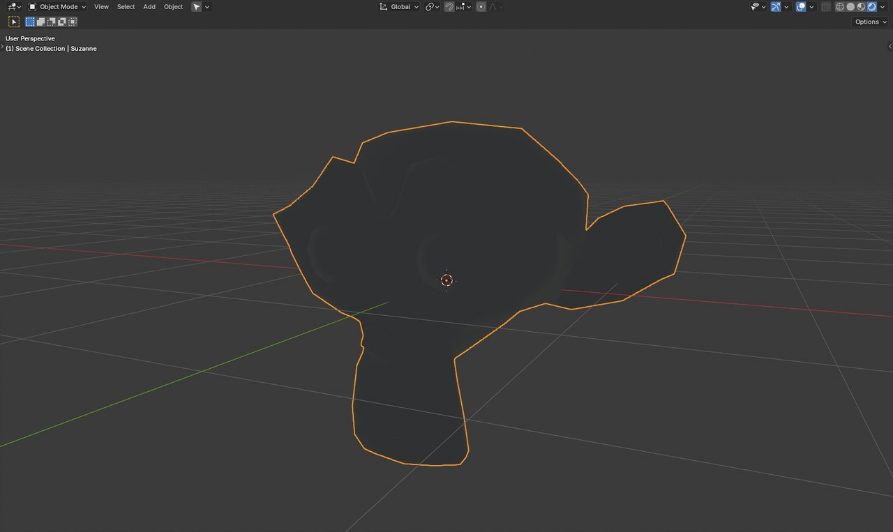
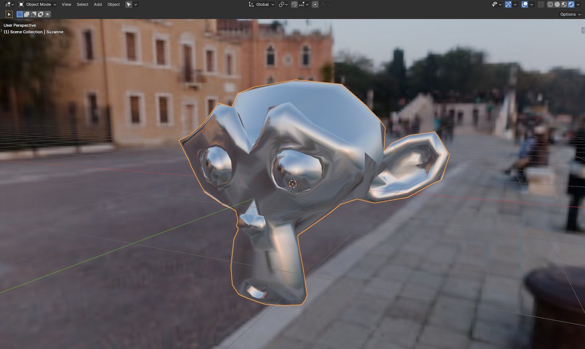
- Apply a metal material to Suzanne beforehand (for example, "Brushed Metal" from "PBR Material Generation").
- Open the "Smart Shader" tab > "HDRI World Management" > "World & HDRI".
- In "HDRI File", choose an HDRI image (.exr / .hdr).
- Click "Build HDRI World".
What to look for: The dark gray background has become the scenery captured in the HDRI, and the metal Suzanne now reflects that scenery. To change the brightness and orientation, adjust "HDRI Strength" and "HDRI Rotation" in the same field, then click "Build HDRI World" again.
ExampleFind and Reconnect a Moved HDRI with "Relink World"(demonstrated on Suzanne)
If you move the HDRI image to another folder, the world can no longer find the image. Tell it the folder you moved the image to, and it finds the image with the same name and reconnects it.
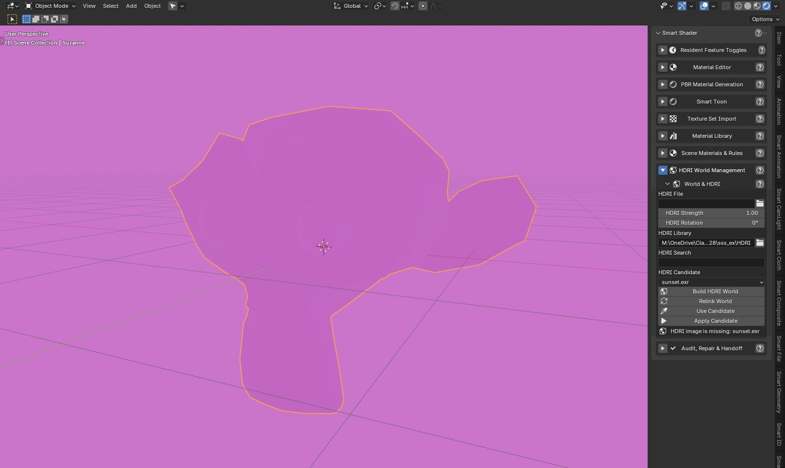
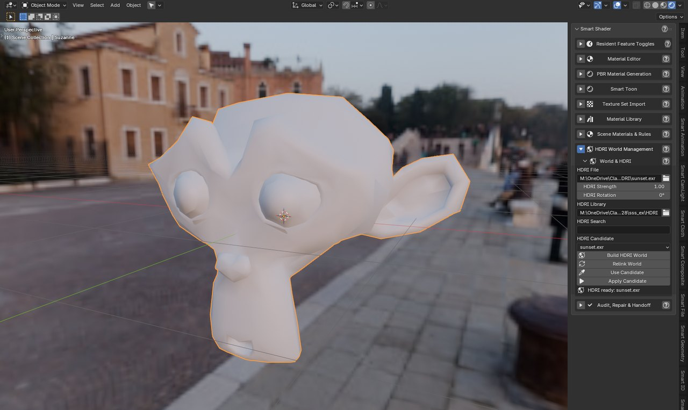
- Open "HDRI World Management" > "World & HDRI".
- Look at the status line at the very bottom (if the image cannot be found, it says so).
- In "HDRI Library", specify the folder you moved the image to.
- Click "Relink World".
What to look for: The scenery has returned to the background, which had turned pink, and the status line at the very bottom of the panel has also changed to "HDRI ready". The "HDRI Strength" and "HDRI Rotation" values are carried over as they were.
5-9. Audit, Repair, and Handoff
Brings together material checking and bulk repair, handoff through ZIPs and manifests (JSON files that describe the contents), and the settings for the save location and bundled features.
LocationThis is the bottom section header. It contains "Audit & Node Debug", "Scene Doctor", "Exchange & Reference", and "Settings".
| Item | What it does |
|---|---|
| Audit & Node Debug | Check with "Audit Active Material" and "Audit Library". "Normalize Output" arranges a minimal node setup, and "Run Self Check" verifies the environment. |
| Last Report | A field where the results of checking, repair, export, and so on are written. Use it to confirm what happened after you click a button. |
| Scene Doctor | Set "Doctor Scope", "Doctor Filter", "Limit", and "Relink Missing Images", check with "Preview Repair", then click "Run Repair" to relink missing images, correct color spaces, wire up, and align nodes all at once. Under "Last Report", "Missing Before Repair" and "Missing After Repair" let you compare the counts before and after fixing. When "Relink Missing Images" is on, "Texture Search Root" also appears. |
| Export Bundle / Import Bundle | Bundles materials and the images they use into a single ZIP and restores them in another location. |
| Export Material Manifest / Export Scene Manifest / Import Material Manifest / Import Scene Manifest | "Material Manifest" exports and imports one material (the selected object's current material), and "Scene Manifest" exports and imports the materials and assignments of the whole scene, as JSON. |
| Write Coverage Report | Outputs the feature correspondence table as a Blender text. |
| Settings | There is "Library Path" under "Persistent Storage", and "Enable this on-demand tool" for each of the "Bundled Features" ("Material Library", "Math Controller", and "PBR Lookdev"). |
ExampleFix Materials Turned Pink by Broken Links All at Once with "Scene Doctor"(demonstrated on Cube)
When you move files, images that can no longer be found are displayed in pink. Scene Doctor finds the images in the folder you specify and relinks them, and it also fixes color spaces and wiring at the same time.
- Look at "Audit, Repair, and Handoff" > "Scene Doctor".
- Choose a "Doctor Scope" (here, the whole scene).
- Leave "Relink Missing Images" turned on, and in "Texture Search Root", specify the folder where the images are now.
- Check with "Preview Repair", then click "Run Repair".
What to look for: The brick pattern has returned to the cube, which was pink. "Last Report" shows Missing before: 1, Missing after: 0, and Relinked files: 1.
Other Screens
6. Common Tasks
Apply a Material from a Preset
Give the selected objects a look you chose while viewing sample images.
- Select objects in the 3D Viewport.
- Open "PBR Material Generation".
- Click "Choose from Preview Images".
- Click a sample image in the list.
Result: A new material is created and applied to the selected objects, and the list closes.
Create an Anime-Style Toon Material
Give a character a stepped-shadow look.
- Select a mesh.
- Open "Smart Toon".
- Click "Create Toon Material" under "Target".
- In "Zone Map", set the number of steps with "Zone Count" and adjust the colors with "Zone Ramp".
- If needed, adjust "Enable Highlight" and the "Rim Light" settings.
Result: A stepped-shadow toon material is created. When you change a setting, it is reflected in the look right away.
Create a Material from a Set of Textures
Create an automatically wired material from a folder of downloaded textures.
- Open "Texture Set Import".
- Specify the texture folder in "Texture Search Root".
- Leave "Import Mode" at "Auto Group".
- Click "Scan Set" and check the images that will be chosen.
- Click "Build from Set".
Result: A new material with the images connected is created.
Fix Broken-Link Images
Relink images that can no longer be found after you moved files.
- Open "Texture Set Import".
- Choose "Texture Scope". To fix the whole scene, choose "Whole scene".
- In "Texture Search Root", specify where the images are now.
- Click "Relink Textures".
- Check the result in "Last Report" under "Audit, Repair, and Handoff".
Result: Images are relinked wherever an image with the same file name is found.
Create Lighting with an HDRI
Quickly set up a background and lighting to check how things look.
- Open "HDRI World Management".
- Specify an HDRI image in "HDRI File".
- Set "HDRI Strength" and "HDRI Rotation".
- Click "Build HDRI World".
- To change how it looks, change the values and click "Build HDRI World" again.
Result: The scene's world becomes the HDRI background and lighting.
Copy Toon Settings to Another Material
Reuse the toon adjustments you made on other materials too.
- Select the object whose material has the settings you want to copy.
- In "Copy / Paste" under "Smart Toon", click "Copy Smart Toon Settings".
- Select the object whose material is the paste destination.
- Click "Paste Smart Toon Settings".
Result: The same settings are applied to the destination material.
Layer Snow or Rust on the Current Material
Add dirt or snow cover without rebuilding the material.
- Select an object.
- Look at "Smart Layers and Masks" in "PBR Material Generation".
- Choose a type in "Layer" (for example, "Snow Layer").
- Set "Layer Strength".
- Click "Apply Layer".
Result: The layer is stacked on top of the selected object's current material. When "Non-Destructive" is on, the original material is kept separately and the layered copy is applied.
Change the Direction of Toon Shadows
Decide the direction the light comes from without using the scene's lights.
- Select an object that has a toon material.
- Click "Create Direction Empty" under "Lighting Direction".
- Move the arrow Empty that was created to the direction you want the light to come from.
- Select the object and the Empty together, then click "Sync Direction From Selection".
Result: The shadows are lit from the direction where the Empty is. If you move the Empty, click it again.
7. Troubleshooting
- I cannot find the "Smart Shader" tab.
- Press N in the 3D Viewport to open the Sidebar, and check the tabs at the right edge. The same tab also appears in the Sidebar of other editors such as the Shader Editor.
- When I open a field such as "PBR Lookdev", only a "Load" button appears.
- Bundled features such as "PBR Lookdev" and "Material Library" are designed to be loaded when you use them. Click "Load" to make them available.
- "This feature is disabled" appears.
- In "Settings" > "Bundled Features" under "Audit, Repair, and Handoff", turn on "Enable this on-demand tool" for that feature.
- Where can I see the result of clicking a button?
- The result of the operation is written in "Last Report" under "Audit, Repair, and Handoff".
- I want to try things without breaking the original material.
- Turn on "Non-Destructive" in "Scene Material Organization". A duplicate is made before overwriting, so the original material is kept.
- When should I click "Rebuild Shader Nodes"?
- Only when you have deleted the generated nodes by hand or they have broken. For everyday adjustments, just changing the settings is reflected.
- I do not want cleanup to delete an important material.
- Make that material the target and click "Protect Target Bundle" to protect it from cleanup, including its images and node groups. Before cleaning up, check the candidates with "Preview Cleanup".
- Where does the material go on an object with two or more material slots?
- When there are two or more slots, the "Apply Slot" buttons appear so you can choose which slot to use. These buttons can be clicked when "Assign Mode" is "Active Slot".
- I changed the HDRI brightness, but the look does not change.
- "HDRI Strength" and "HDRI Rotation" are used when you click "Build HDRI World". After changing the values, click "Build HDRI World" again.
For problems common to every add-on, such as an add-on not appearing or the interface language not changing, see "Troubleshooting" in the SmartTools Overall Specification.
8. Glossary
- Material
- A set of settings that defines how an object looks, such as its color, gloss, and bumps.
- Material Slot
- A frame that holds a material on an object. One object can have several.
- Nodes
- The parts that make up the inside of a material. You connect them with lines to build the look.
- Principled BSDF
- Blender's standard material node. You connect images such as color and roughness to it.
- PBR
- A way of building a look that is close to how light behaves in the real world.
- NPR / Toon
- A look that is not photorealistic, like a drawing or anime.
- Zone
- Each individual step of toon shadow. They are numbered in order from the darkest.
- Rim Light
- A light that makes the outline of an object glow thinly.
- HDRI
- An image that records the surrounding scene and its brightness. It is used for the background and lighting.
- Texture
- An image used in a material. It is often a set of images for color, roughness, bumps, and so on.
- Broken Link
- A state where an image has been moved and Blender cannot find it.
- Color Space (Non-Color)
- A setting for whether an image is treated as color. Roughness and normal images are set to Non-Color.
- Fake User
- A setting that makes even an unused material less likely to be deleted on save.
- Asset
- A part made available from the Asset Browser, including in other files.
- Manifest
- A JSON file that describes the contents of a material. It is used for recreating and handing off.
- Regex
- A way to write a name condition as a pattern using symbols.
9. Appendix: Version, Checksum and Limitations
| Add-on | SmartShader Suite (smart_shader_suite) |
|---|---|
| Version | 1.0.0 |
| ZIP | SmartShaderSuite_1.0.0.zip |
| Size | 11,690,913 bytes |
| SHA256 | 7ffaccee892adeb7dd367ad83c6f002368c60a239ae5ce942014ca95eeb098ca |
Limitations and Notes
- "Pick Material from Viewport Click" can be used only from the Sidebar of the 3D Viewport.
- What "Photo to PBR" creates is a base for adjustment. It does not fully reproduce the material in the photo.
- In Smart Toon, when the selected object has no material, only the "Target" field appears.
- When Smart Toon's "Base Source" is set to "PBR/FX Preset", the "Zone Map" field does not appear.
- Smart Toon's "Lighting Direction" field appears only when "Lighting Source" is "Toon Direction".
- "Paste Smart Toon Settings" can be clicked only when you have selected a material that can receive toon settings and there is copied content.
- "Apply Slot" appears when, for example, an object has two or more material slots.
- "PBR Lookdev" and "Material Library" show no contents until you click "Load".
- Changing "HDRI Strength" and "HDRI Rotation" after building has no effect on its own. Click "Build HDRI World" again.
SmartShader Suite Manual v1.0.0 / Built 2026-11-19